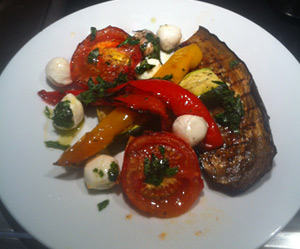

Bistecca und Gemüse auf dem Grill
5,5 von 6Fleisch:
Kalbsplätzli in einer Marinade aus Olivenöl, etwas Essig, Knoblauch, getrocknetem Oregano, Salz und Pfeffer 1-2 Stunden einlegen. Das Fleisch auf dem heissen Grill je Seite ca 2 min grillieren und heiss in die restliche Marinade zurücklegen und mit Petersilie servieren.
Gemüse:
Tomaten, Zucchetti, Aubergine, Peperoni halbieren. Einige ganze, ungeschälte Knoblauchzehen dazu und alles mit Olivenöl und Salz marinieren. Das Gemüse auf geschlossenem Grill, bei mittlerer Hitze ca 30 min garen.
